ODOM Tower
Grade A office space shaped around connection and performance.
Discover TowerNORODOM BOULEVARD / PHNOM PENH
A landmark mixed-use development combining Grade A Offices, Luxury Residences, and Lifestyle Retail.
Currently under construction
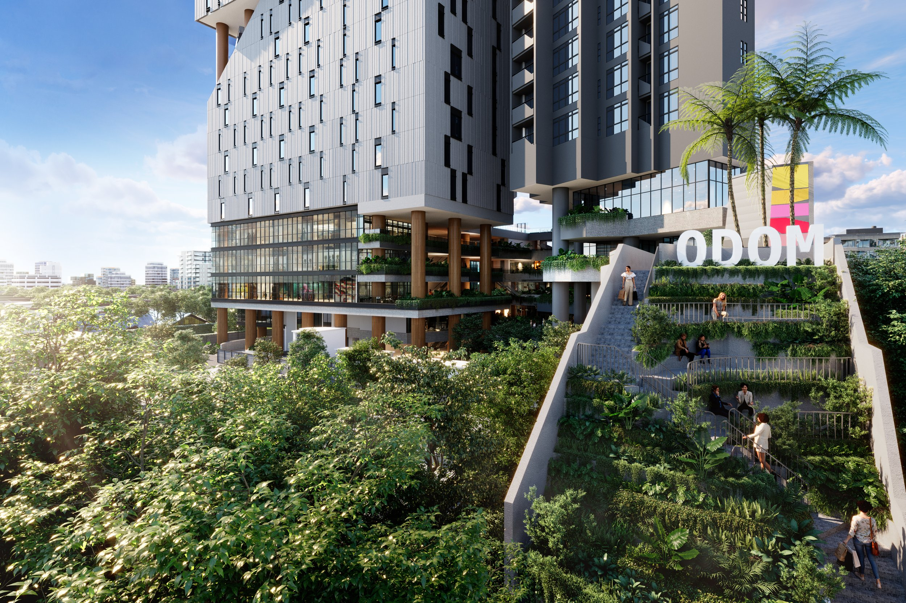
01 / PROJECT OVERVIEW
ODOM brings homes, workplaces, retail, dining and green shared spaces together in one connected city destination on Norodom Boulevard.
Grade A office space shaped around connection and performance.
Discover TowerPremium homes designed for natural light and everyday ease.
Discover LivingRetail, dining, public green spaces and daily life at the podium.
Discover SquareAn IHG luxury hotel experience within the ODOM destination.
Discover Vignette02 / ABOUT THE DEVELOPER
Urban Living Solutions is a Cambodian-owned developer focused on community-led places. Its work brings together residential, lifestyle and business environments with an established local perspective.
Public project wording is based on supplied ODOM presentation materials.
03 / THE ODOM STORY
ODOM was conceived as a new mixed-use destination for Phnom Penh, bringing workplaces, residences, retail, hospitality, and green shared spaces together on Norodom Boulevard.
Its story began with a simple question: how could the city create better spaces for a new generation of businesses, residents, and communities?
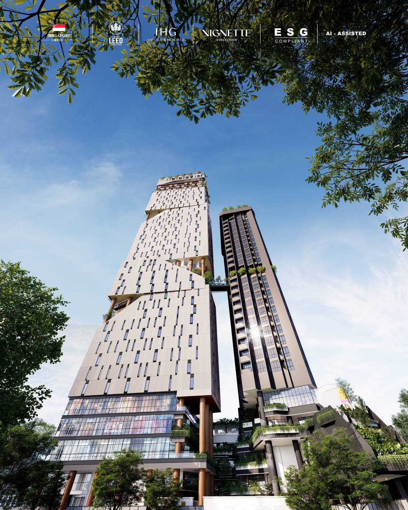
THE BEGINNING
ODOM emerged from Urban Living Solutions' observation that many growing businesses in Phnom Penh had limited options once they outgrew converted villas, shophouses, or creative community spaces.
The vision was a professionally designed destination where ambitious companies could find quality workplaces, useful amenities, and a stronger sense of community, while having the opportunity to own a long-term business asset.
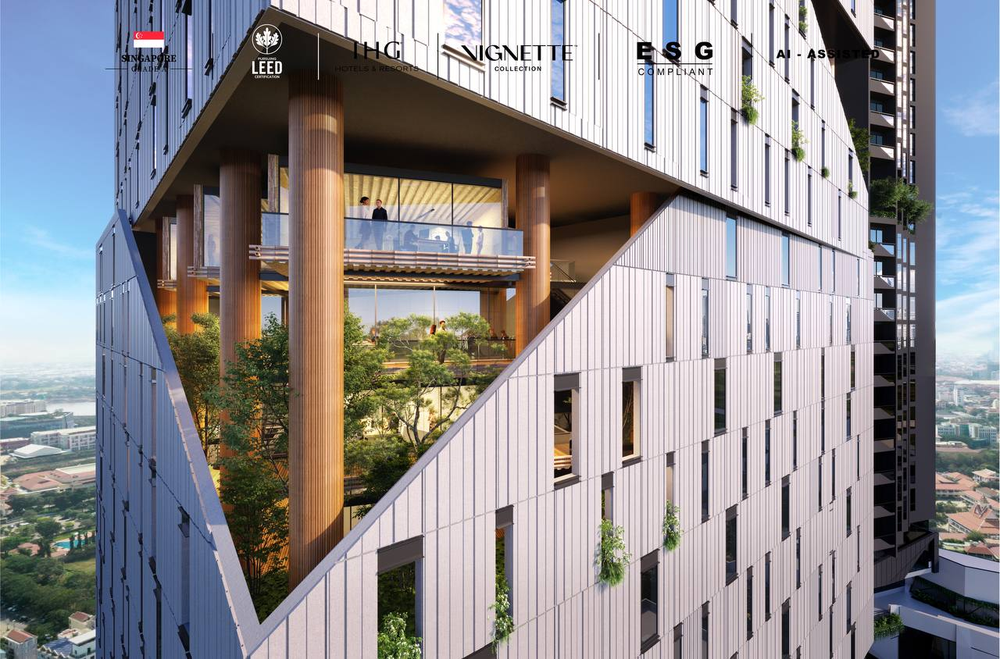
DESIGN WITH PEOPLE AT THE CENTRE
Urban Living Solutions appointed Singapore-based Kite Studio Architecture to develop an integrated high-rise concept that placed people, usability, and community at the centre of the design.
Rather than a conventional monolithic tower, the concept became an asymmetrical collection of interconnected buildings and shared spaces, allowing office, residential, retail, and hospitality functions to support one another.
VILLAGES IN THE SKY
The commercial tower was envisioned as a series of vertical villages, each with green space and places for people to meet, relax, and connect beyond a traditional office floor.
A landscaped skybridge links the commercial and residential components, reinforcing the idea of a destination where living, working, and social life are closely connected.
Designed to reduce the anonymity of conventional high-rise buildings.
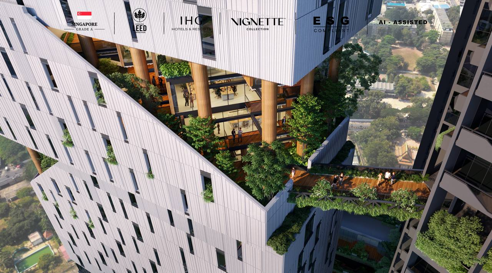
DESIGNED FOR PHNOM PENH'S CLIMATE
ODOM's design combines concrete, glazing, shade, natural ventilation, and planted areas in response to Phnom Penh's heat and tropical climate.

A CONNECTED CITY DESTINATION
ODOM brings together several complementary parts of city life:
Together, these components create a connected urban destination rather than a standalone office tower or condominium.
THE MEANING OF ODOM
The name ODOM comes from a Khmer word associated with excellence, greatness, abundance, and strength. Its identity was inspired by the distinctive form of the main tower, resulting in a memorable brandmark and bold architectural character.
A landmark form deserved a name with equal strength.
AT THE HEART OF NORODOM BOULEVARD
ODOM is positioned along Norodom Boulevard, within one of Phnom Penh's most established diplomatic, commercial, and residential areas. Its central location connects the project to the wider city while supporting ODOM's vision as a destination for business, living, and lifestyle.
ODOM story adapted from official Urban Living Solutions project materials.
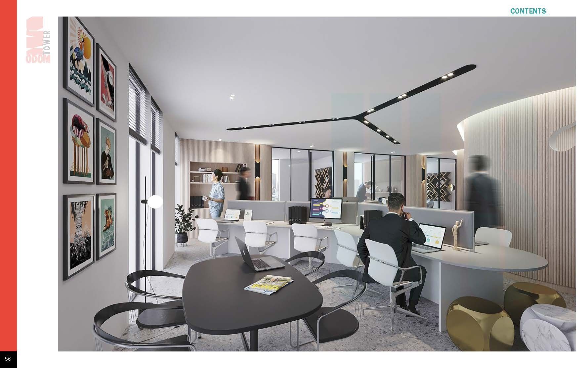
04 / ODOM TOWER
ODOM Tower is positioned as a Grade A office destination at the heart of the development, designed for modern teams, owners and investors.
05 / ODOM LIVING
ODOM Living brings together one to four-bedroom residences, light-filled interiors and shared amenities for a premium everyday living experience.

ODOM LIVING
Jun 20
In a city where premium real estate is limited and true integrated living is rare, ODOM Living stands out as Phnom Penh's most sought-after urban residence. More than a luxury condo, it sits at the heart of the iconic ODOM mixed-use development: ODOM Living luxury homes, ODOM Square boutique retail and dining, and ODOM Tower Grade A offices. Together, they create a vibrant city block that elevates daily life and adds long-term value.
If you are a professional, an expat, or a family seeking a prestigious city home, ODOM Living is a considered choice for style, comfort, and urban convenience.

PROJECT HIGHLIGHTS
WORLD-CLASS FACILITIES
WHY ODOM LIVING
ODOM Living enjoys an address in Phnom Penh's diplomatic and financial heart. Top schools, embassies, shopping malls, and five-star hotels surround you, ensuring daily convenience and a premium neighborhood atmosphere.
Designed and built to international standards by Urban Living Solutions, ODOM Living offers contemporary layouts, high ceilings, premium fittings, and spectacular city views for those who appreciate comfort and modern aesthetics.
ODOM Living is residential, yet its value is elevated by the wider masterplan. Grade A offices attract reputable companies and professionals, while boutique retail and dining bring cafes, fine dining, and lifestyle shops to your doorstep. This synergy makes the address more vibrant, secure, and enduringly desirable than a standalone condo.
Whether you plan to live here or offer a home to top-tier tenants, the thoughtful unit mix and full facilities suit busy professionals, young families, and executives who demand the best.
Urban Living Solutions is known for delivering landmark projects with reliable after-sales service, offering peace of mind that a new home will be completed and maintained to a high standard.
While ODOM Tower offers investment packages for corporate buyers, ODOM Living is crafted for residents who want a premium city home with unmatched comfort, convenience, and lifestyle value, amplified by a landmark office and retail hub at the door.
If you are looking for a statement address and a smart long-term home for you or your family in Phnom Penh's prime zone, ODOM Living is simply your best buy.
AVAILABLE UNITS FOR SALE
1BR / OL18-1B
$306,900
2BR / OL22-2C
$533,500
3BR / OL06-3BR
$759,550
4BR / OL18-4BR
$1,105,500
ODOM LIVING
Comment below or message me directly - let's secure your future home at ODOM Living.
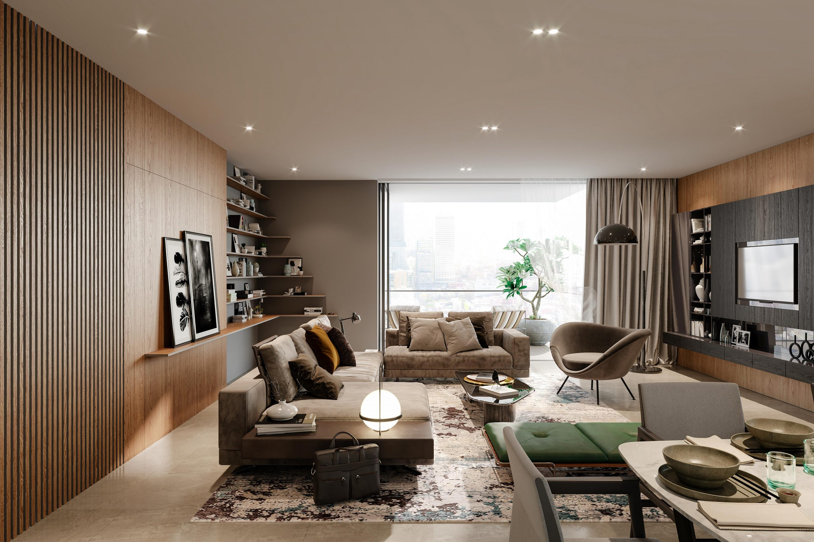
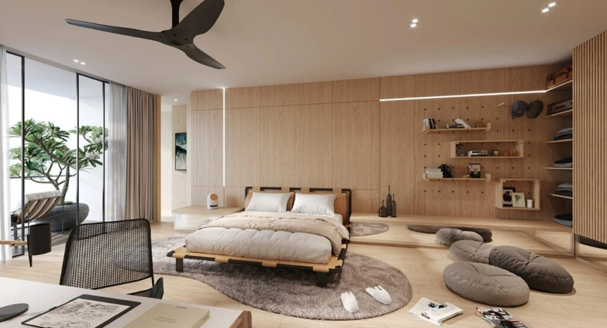
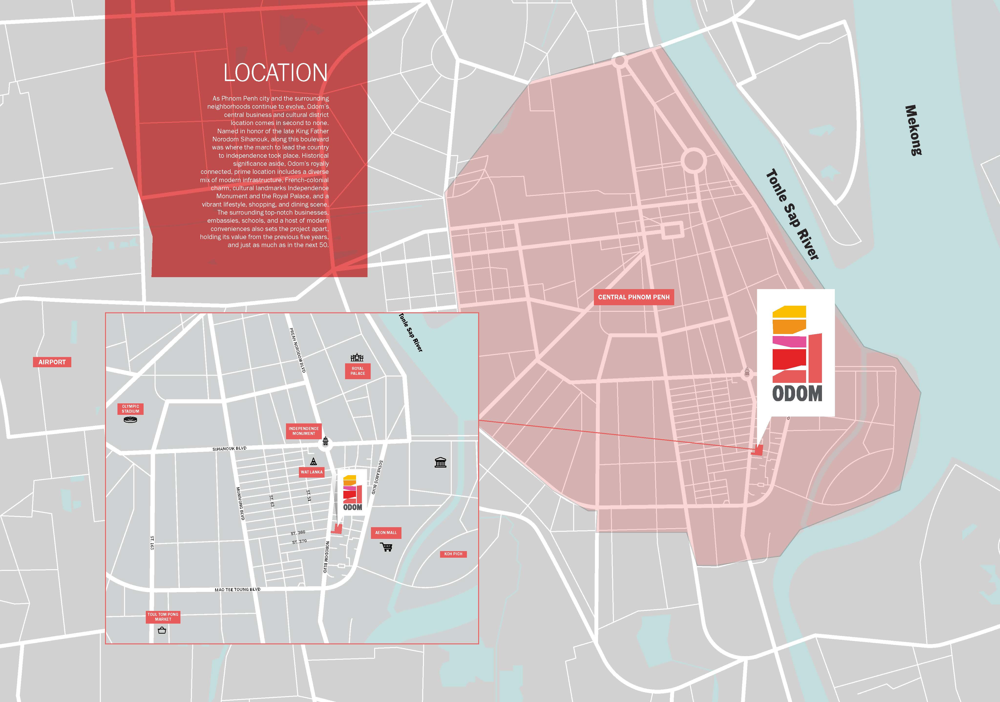
06 / ODOM SQUARE
ODOM Square is a landscaped podium for retail, dining, public green spaces and community lifestyle. It connects the development above and below ground, with underground parking supporting the wider destination.
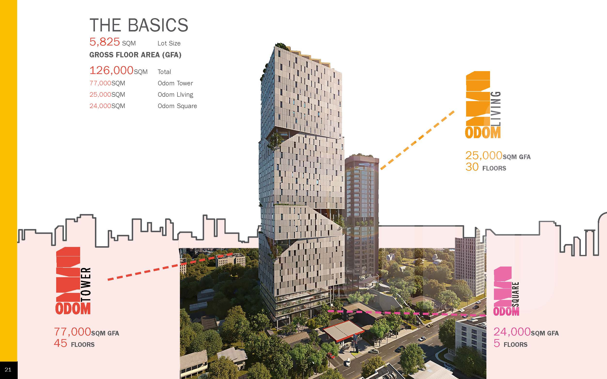
07 / PROJECT VIDEO
Explore the vision for a landmark that brings residences, workspaces, retail and public life together.
08 / PROJECT PRESENTATION
Explore selected ODOM stories, spaces and visual direction through the supplied project presentation and magazine.
Public download approval for ODOM Magazine is pending client confirmation.
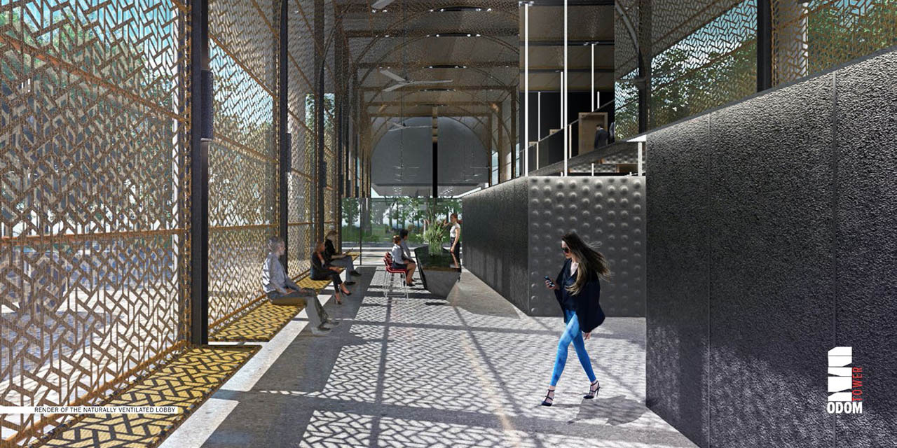
ODOM09 / AVAILABILITY
Selected entries from supplied 2026 availability sheets. Availability and pricing are subject to change.
ODOM Living Masterplan - Availabilities
| Unit | Floor | Type | Net area | Price | Status |
|---|---|---|---|---|---|
| OL25-1A | 25 | 1 Bedroom | 82 sqm | USD 330,019 | Available |
| OL25-1B | 25 | 1 Bedroom | 83 sqm | USD 333,245 | Available |
| OL25-2C | 25 | 2 Bedroom | 140 sqm | USD 591,141 | Available |
| OL25-2D | 25 | 2 Bedroom | 112 sqm | USD 474,426 | Available |
| OL23-3A | 23 | 3 Bedroom | 203 sqm | USD 884,396 | Available |
| OL23-4A | 23 | 4 Bedroom | 272 sqm | USD 1,185,868 | Available |
10 / OFFICE AVAILABILITY
Selected ODOM Tower entries from the supplied availability sheet.
| Unit | Floor | Net area | Price | Status |
|---|---|---|---|---|
| OT38-03 | 38 | 127 sqm | USD 540,835 | Available |
| OT38-06 | 38 | 73 sqm | USD 305,915 | Available |
| OT37-01 | 37 | 202 sqm | USD 909,355 | Available |
| OT31-08 | 31 | 75 sqm | USD 324,205 | Available |
| OT14-06 | 14 | 73 sqm | USD 276,834 | Available |
| OT09-08 | 9 | 61 sqm | USD 227,251 | Available |
GRR / GBB INVESTMENT
GRR and GBB terms shown are based on a supplied sales example and remain subject to eligible-unit availability, final contract terms, legal approval and client confirmation.
11 / PLAN VIEWER
View the supplied building-level availability plans. Overall site masterplan not yet provided.
Floor-by-floor residential layout and availability information, dated 30 Jun 2026.
View Larger PlanFloor-by-floor office layout and availability information, dated 31 Jul 2026.
View Larger Plan12 / CONSTRUCTION UPDATE
The latest dated construction progress, milestone and completion update will be added after client confirmation.
No progress percentage or completion date is shown until a current client update is provided.
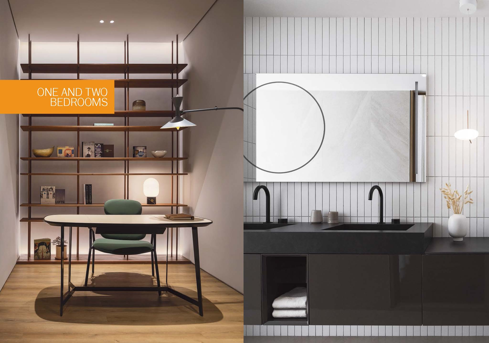
Update pending13 / BOOKING PROCESS & DOCUMENTS
Current approved booking form and payment terms pending client confirmation.
14 / GALLERY
A curated view of ODOM's architecture, Phnom Penh context, premium workspaces and residences.
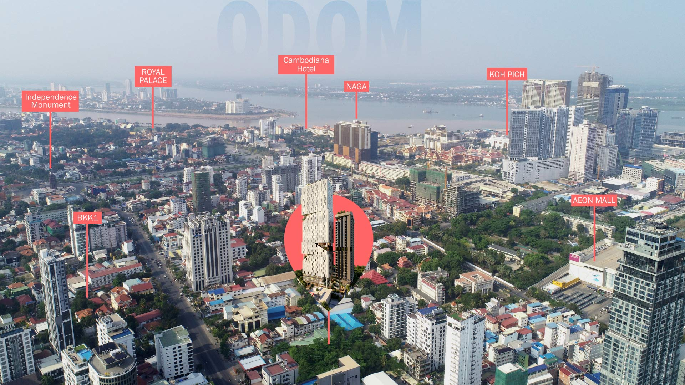
15 / LOCATION
On Norodom Boulevard, ODOM sits close to embassies, business hubs, shopping, restaurants, schools and cultural landmarks.
Final map link pending client confirmation.
16 / CONTACT
Contact Sophe Agency for ODOM availability, presentations and booking information.